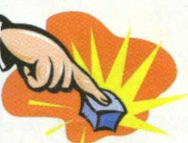
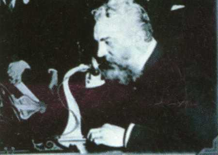
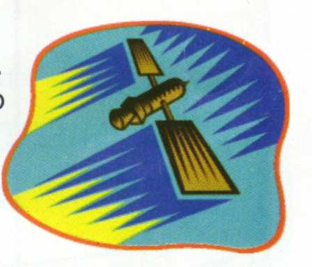

Por: Mário Câmara
Para compreender como funcionam os mecanismos de busca, será preciso conhecer a história da Internet. Como ela foi criada e modificada até chegar aos dias de hoje. Vamos fazer um resumo bastante abrangente que, com certeza, nunca foi visto em nenhuma outra revista. Esperamos que vocês gostem do que preparamos.
| 1836 |
| 1838 |
| 1838 até1870 |
| 1838 |
| 1957 |
| 1961até1968 |
| 1969 |
Samuel F.B.Morse pede a patente do telégrafo
O telégrafo foi o primeiro meio criado pelo homem que permitia a comunicação à distância em tempo real. Você pode comparar o telégrafo desta época ao seu computador de hoje. Os dois têm a mesma função, em épocas diferentes. 
É feita a padronização do CÓDIGO MORSE
Apessar de ter sido inventado há 2 anos, não exitia uma padronização na forma de se comunicar usando o telégrafo. Morse criou um padrão que seria seguido até hoje. O código se baseava em sinais curtos e longos, da mesma forma que seu computador usa ZEROS e UNS. Podemos dizer que o Código Morse teve, nessa época, o mesmo papel do Windows e do TCP/IP. Cabos de telégrafo ligam os Estado Unidos inteiro e Europa
Cabos de telégrafo se espalharam rapidamente pelos Estados, ligando-o de leste a oeste. Em seguida, um cabo trasatlântico ligou os EUA à Europa. Podemos comparar o cabeamento do telégrafo à própria Internet.
Alexander Graham Bell lança o telefone
O telefone, hoje, desempenha um papel fundamental na forma como as pessoas usam a Internet. Sem ele, seria impossível existir a Internet, uma vez que, atualmente, todos usam uma conexão discada. 
A União Soviética lança o primeiro satélite artificial
Ao lançar o Sputinik, a URSS iniciou a era da comunicação Global. Em reposta a isto, os Estado Unidos começaram a acelerar o seu programa espacial e decidem que o Departamento de Defesa (DoD) deve criar a ARPA (Agência de Projetos de Pesquisa Avançada - Advanced Research Projects Agency). A ARPA vai, na futuro, se tornar o que hoje chamamos INTERNET.
São definidos os padrões para uma rede Packet Switch
Os EUA estavam muito preocupados com uma possível guerra nuclear. Isto poderia interromper a comunicação e a transferência de dados. A maneira de evitar uma paralisação seria criar um padrão que pudesse enviar e receber dados, na forma de pequenos pacotes, que não dependeriam de apenas um rota para chegar ao seu destino. Assim, estava criada a rede de pacotes comutados. A Internet está baseada nisto.